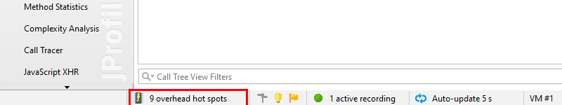
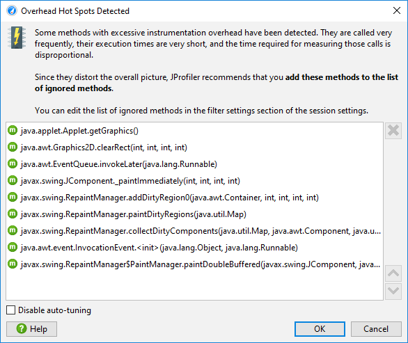
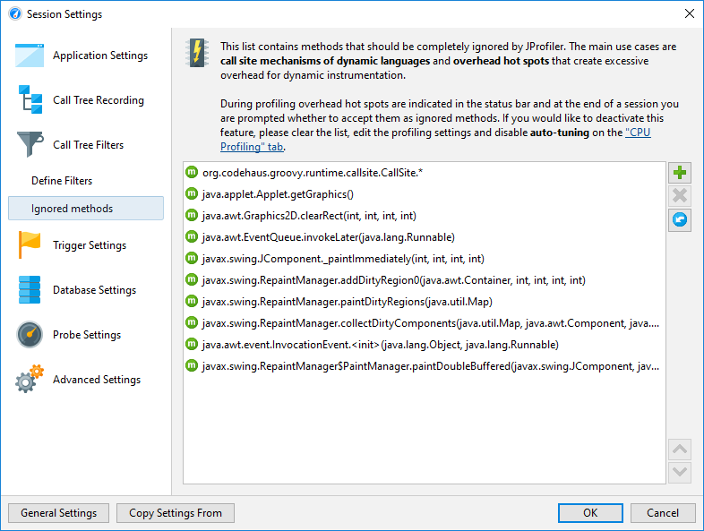
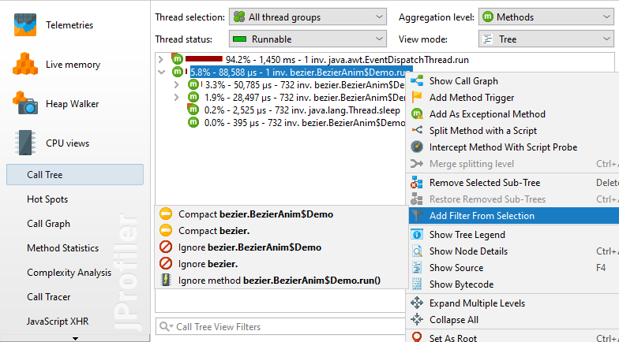
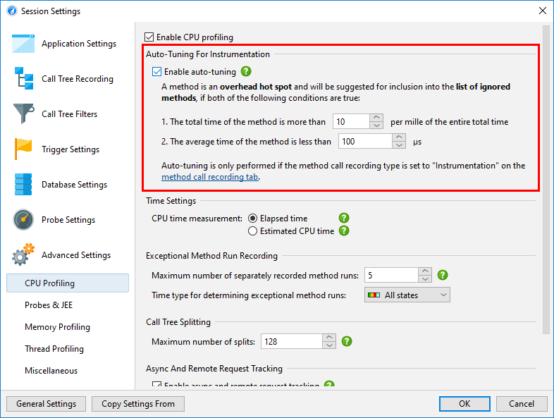

If the method call recording type is set to instrumentation, all methods of profiled classes are instrumented. This creates significant overhead for methods that have very short execution times. If such methods are called very frequently, the measured time of those method will be far to high. Also, due to the instrumentation, the hot spot compiler might be prevented from optimizing them. In extreme cases, such methods become the dominant hot spots although this is not true for an uninstrumented run. An example is the method of an XML parser that reads the next character. Such a method returns very quickly, but may be invoked millions of times in a short time span.
This problem is not present when the method call recording type is set to sampling. However, sampling does not provide invocations counts, only shows longer method calls and several views do not have their full functionality when sampling is used.
To alleviate the problem with instrumentation, JProfiler has a mechanism called auto-tuning. From time to time, the profiling agent checks for methods with high instrumentation overhead and transmits them to the JProfiler GUI. In the status bar, an entry alerting to the presence of overhead hot spots will be shown.

You can click on that status bar entry to review the detected overhead hot spots and choose to accept them into the list of ignored methods. These ignored methods will then not be instrumented. When a session is terminated, the same dialog is shown.

After you apply the new profiling settings, all ignored methods will be missing in the call tree. Their execution time will be added to the self time of the calling method. If later on you find that some ignored methods are indispensable in the profiling views, you can remove them in the Ignored Methods tab in the session settings.

The default configuration for ignored methods includes the call site classes for Groovy that are used for the dynamic method dispatch, but make it difficult to follow the actual call chain.
If you want to manually add ignored methods, you can do so in the session settings, but a much easier way is to select a method in the call tree and invoke the Ignore Method action from the context menu.

In the filter settings, you can also ignore entire classes or packages by setting the type of the filter entry to "Ignored". The Add Filter From Selection menu contains actions that depend on the selected node and suggest ignoring the class or packages up to the top-level package. Depending on whether the selected node is compact-profiled or profiled, you also see actions for changing the filter to the opposite type.
In case you don't want to see any messages about auto-tuning, you can disable it in the profiling settings. Also, you can configure the criteria for determining an overhead hot spot. A method is considered an overhead hot spot if both of the following conditions are met:
